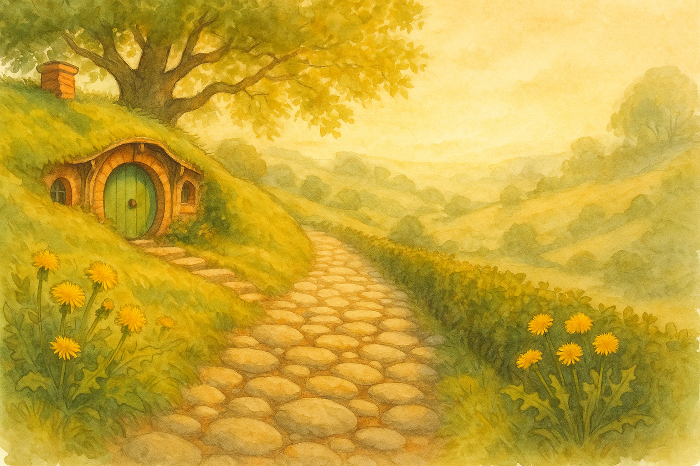

This morning the Hill path looked as if it had been freshly polished — not by any broom, mind you, but by sunlight itself. The stones were warm already, and the dandelions along the edge were standing up with that bright, shameless confidence only spring can manage. I went out with no plan grander than a breath of air, and found the day had left its door open for me.
There is a habit we learn on the Road: always take the quickest line to shelter, to water, to wherever your feet may stop being sensible. At home, it is easier to forget that the safest path is not always the best one. Sometimes the heart needs the longer way — the bend by the hedge where the birds argue, the bit of lane where you can smell turned earth and last night’s rain.
I have been in more corners of Middle Earth than a respectable hobbit ought, and I have returned (thank goodness) to a front step that knows my weight. Yet I still hear that old whisper from the map’s margin: “The Road goes ever on and on…” So I took the long way round the Party Field, nodded to the smoke from a neighbour’s chimney, and came back to the kettle with my thoughts better sorted — as if my boots had done the arranging.
Filed under: Middle Earth • Written at Bag End